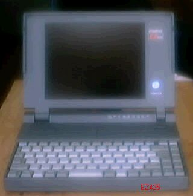

DynaBook EZ425について

ダイナブックという言葉を聞いたら、アラン・ケイのことを思い出してもらいたい。
今のパソコンは、CPU速度が2GHzを越え、1967年当時では考えられないほど、ハード
ウエアの能力こそ、すばらしいものになったように見える、しかし、パーソナル・ダイナミック・
メディア、「ダイナブック」のレベルまでは、いまだ到達していないようだ。
東芝では、当然、アラン・ケイの、ダイナブックのことを、知っていて、自社の生産する、
ノートパソコンに、この名前を付けたようだが、さすがに、アメリカでは、別な名前にして
いると聞きます。
この年代のノートパソコンは、リプレースにより、使用していた企業から、大量に
放出されたようで、昨年、秋葉原で、1200円で投げ売りされていたのを、購入したものです。
電池がだめになっていましたが、その他は正常、400MBのHDもついていました。EZ425の特長と
しては、一太郎DASH、ATOK7、LOTUS1-2-3が、ROMで入っており、動作が軽快なことです。逆に
、このROMがわざわいして、拡張性に欠けようです。電池を探しているのですが、正規の物は、
１万円もするので、ACだけでの運用になっています。
（2002/08/23 記）
古いノートパソコンのページに戻る